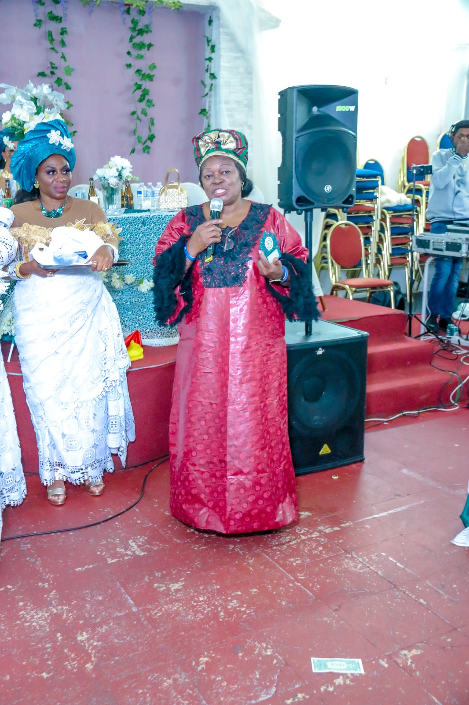
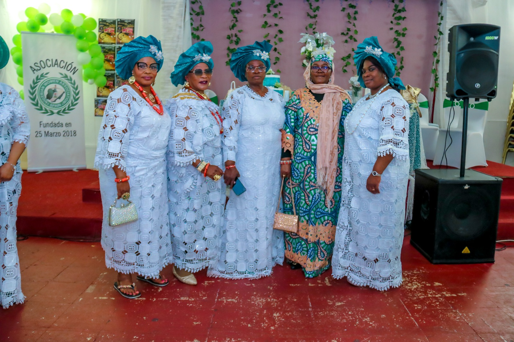

Community care

Nigerian Women Association Madrid, Spain
Empowering women.
Strengthening communities.
We turn compassion into practical action—helping women and children build safer, healthier and more independent lives in Spain and Nigeria.
Since 2018Madrid · Nigeria
0Women received
language support
language support
0Children received
educational support
educational support
0People received
medical support
medical support
0Women economically
empowered
empowered
Who we are
Community care, built on unity.
We are a group of women united by a shared vision: helping others live better lives through love, dignity and compassion.
Through language classes, welfare support, practical skills training and empowerment programmes, NWAMS builds bridges toward a more hopeful future.
Discover our story →What we do
Change that can be felt.
Practical, community-led programmes shaped around the needs of women and children.

Madrid, SpainWhy it matters
When one woman rises, a community rises.
Our work is rooted in a simple belief: every woman deserves the chance to be heard, supported and economically independent—and every child deserves to learn with dignity.
“A ray of hope and change for women in distress. NWAMS is a true blessing.”Christianah Ojeme · Community advocate
NWAMS in action
Stories you can see.
Watch how practical assistance and economic empowerment create new possibilities for women and families.
Economic opportunity
Women’s empowerment
Current campaign
Clean water should never stand between a child and school.
Together with Hope Ambassadors & Childcare Organisation, we are bringing boreholes to rural Nigerian communities where children walk long distances for water before class.
See the project ↗
10communities
we aim to reach
we aim to reach
Voices of impact
What our community says.
The commitment of NWAMS to unity is seen in their impactful programmes. We are proud to support them.
Grateful for NWAMS’ unwavering support in building a brighter future for all.
Empowering communities through compassion and action. NWAMS is making a difference.
Be part of the change
Your kindness can open the next door.
Give, volunteer or become a member. However you join us, your action helps a woman or child move forward with dignity.